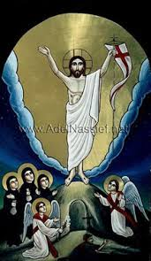
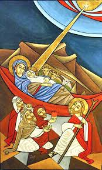
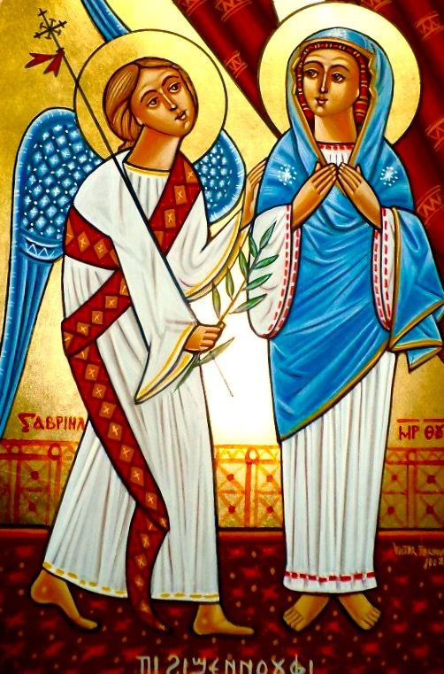
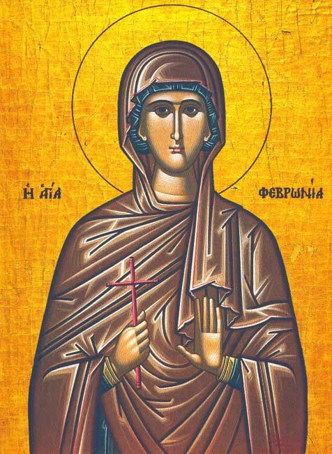

29th Day of Thoout 1737 (October 9th 2020)
The Commemoration of the Three Major Feasts of the Lord
The church arranged a celebration on thw 29th of each Coptic month to commemorate the three major feasts of the Lord: The Annunciation, Nativity, and the Resurrection of Our Savior.
The rites of the service are in the joyful tunes with the readings as it is mentioned in the Katameros. An exception during the months of Tubah ad Amshir, the church does not celebrate the commemoration, for they represent the law and the prophets. They also come before the month of Baramhat when the Annunciation of the birth of the Lord Christ was fulfilled.
The blessing of these feasts be with us. Amen
The Martyrdom of St. Arbsima (Repsima) the Virgin, Agatha her Mother and Her Sisters the Virgins
 On this day also, the holy virgins Arbsima (Repsima) and Agatha (Ghana) and their sisters, were martyred during the reign of Emperor Diocletian.
On this day also, the holy virgins Arbsima (Repsima) and Agatha (Ghana) and their sisters, were martyred during the reign of Emperor Diocletian.
This infidel sought out the most beautiful damsel to marry. He sent artists to every country and ordered them to paint a portrait of the most beautiful damsel that their sights fell on and to give him an accurate description of her. When they arrived nearby Rome, they entered a convent for virgins and found Saint Arbsima and none was like her in beauty. They painted a portrait of her and sent it to the Emperor who rejoiced when he saw it. He sent to the kings and governors to invite them to the wedding celebrations.
When Arbsima and the virgins knew that, they wept, and left the convent fleeing, entreating the Lord Christ to help them and to keep their virginity. They fled to the country of Armenia, and entered the province over which Tridates was king. There they dwelt in a winery in a deserted garden. They had great trouble in getting their food, so one of them made glass, sold it, and with the money they bought their food.
When Diocletian sought for Arbsima, he did not find her. Later on, he heard that she was in the country of Armenia so he sent to Tridates the governor to look for her. When the virgins heard that, they left their shelter and hid themselves in the city. But someone informed about them. Tridates then commanded to bring Arbsima to him and when she refused, they abducted her and brought her to him.
God gave St. Arbsima power to overcome the governor; she pushed him forcefully and he fell on his back. She left him lying on the floor although he was well known by his might and bravery in war. Ashamed of having been vanquished by a virgin damsel, he ordered to cut off her head. The soldiers came and tied her, tore out her tongue, plucked out her eyes, and then cut her into pieces. When the governor rose up from his fall and regained his senses, he was sorry for killing the saint. He ordered to slay the rest of the virgins. The soldiers pierced the soles of their feet, flayed them, cut them into pieces, and then cast them out. One of them was sick and was lying on a bed, and she cried out to the soldiers so she might join her sisters. So, they cut off her head also and thus, all the virgins received the crown of martyrdom. The soldiers also slew all who had come with them from Rome.
After their departure, the governor became mad and the physicians could not help him until Saint Gregory, Bishop of Armenia, came to him and prayed over him. By this he was healed of his affliction and believed in the Lord Christ. He took the bodies of the holy and pure virgins and laid them in a holy place.
The blessing of her prayers be with us. Amen
The Martyrdom of Saint Febronia the Nun
On this day, St. Febronia, the ascetic virgin, was martyred. This saint was the niece of the superior of a convent that had fifty virgins, in a place called "Ouryana" in Mesopotamia. Her aunt brought her up in the fear of God and taught her the reading of the Holy Books. St. Febronia vowed herself to the Lord Christ, and she fought the good fight by asceticism, fasting for two days at a time, and unceasing in her prayers.
When Emperor Diocletian issued his edict to worship idols, many Christians were martyred by his hands. When the virgins heard that, they were afraid and left the convent and went into hiding. None was left in the convent except St. Febronia, another sister and the abbess.
On the following day, the envoys of the Emperor came, seized the abbess, and humiliated her. St. Febronia said to them, "Take me and set free this old woman." But they took her as well, bound in ropes, and brought them to the Governor. At that time she was twenty years old, and was attractive. The Governor asked her to worship the idols and promised her many things but she refused. He ordered that she be beaten with rods, and her dress to be torn off. The abbess cried out to him saying, "May God rip you up, O wild beast, for you want to put to shame this young orphan girl." The Governor was wrathful, and ordered St. Febronia to be squeezed by the wheel, and to comb her body with an iron comb until her flesh was completely torn. During all that, she prayed to the Lord asking for help. He then cut out her tongue and smashed her teeth so that she could not pray. But the Lord strengthened her and comforted her.
Finally, the Governor ordered her head cut off, and she received the crown of martyrdom. A righteous man took her body and shrouded it with costly shrouds, and placed it in a golden box.
The blessing of her prayers be with us, and Glory be to our God, forever. Amen.
Read More